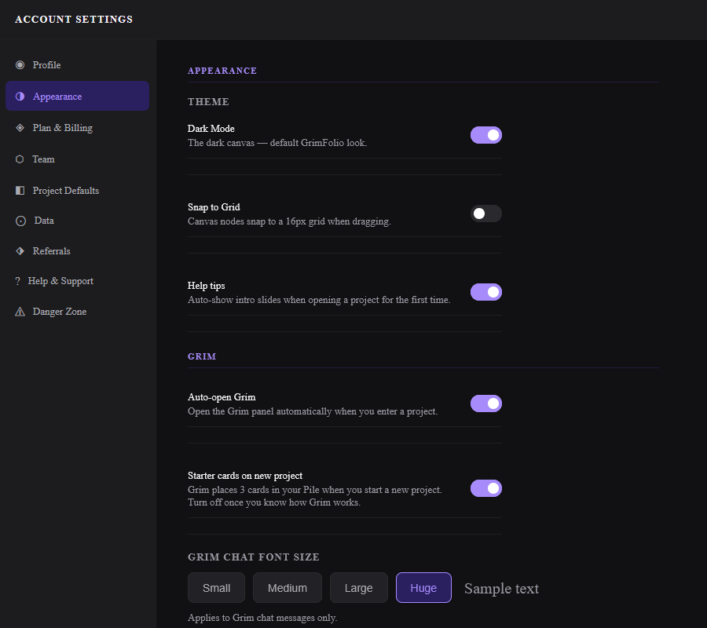
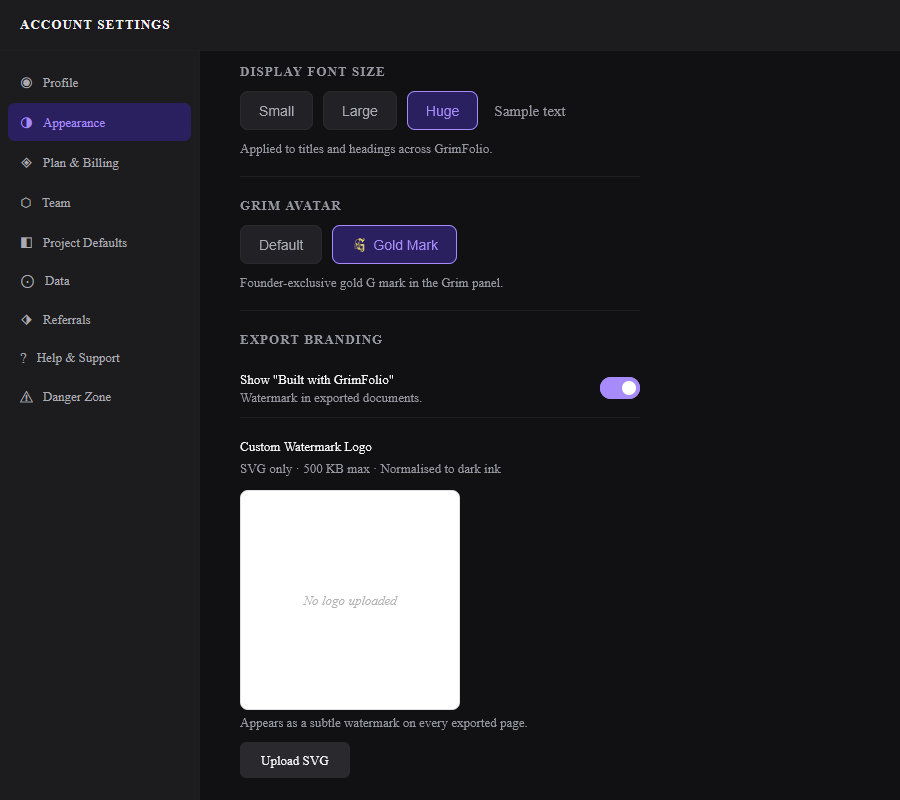

Account Settings
Account Settings is accessible from any screen in GrimFolio. Click your name or email address in the top-right corner to open it. The modal has a sidebar of tabs. Most changes save automatically as you make them.
Profile
Your display name, company or studio name, email address, and password settings.
Display name — Appears across the app and in exported document headers. Set it to your name, studio name, or whatever you want GrimFolio to call you.
Company or studio name — Appears in export headers alongside the project name. Optional but useful for professional handoffs.
Email — Read-only. Your login email cannot be changed from this screen.
Password — Click Send password reset email and follow the link in your inbox to set a new password.
Contact preference — A toggle at the bottom lets you opt in or out of occasional outreach from the GrimFolio team.
Legal links — Privacy Policy, Terms of Service, and Disclaimer — are at the bottom of this tab.
Appearance
Controls theme, canvas behavior, and Grim's interface.


Theme
A single toggle: Dark Mode. On by default. Turn it off to switch to light mode. The toggle applies immediately without saving.
Snap to Grid
Toggles a 16px grid on the Stage 2 canvas. When on, cards snap to grid positions during drag. Off by default.
Help Tips
Controls whether intro slides appear the first time you open a project. On by default. Turn it off once you know how each stage works.
Grim Settings
| Setting | What it does |
|---|---|
| Auto-open Grim | Opens the Grim panel automatically when you enter any project. |
| Starter cards on new project | Grim places 3 starter cards in your Pile when you create a new project. Turn off once you are comfortable with the workflow. |
| Grim Chat Font Size | Sets text size in Grim's chat messages: Small, Medium, Large, Huge. A live sample shows the selected size. |
| Display Font Size | Sets the size of titles and headings across GrimFolio: Small, Large, Huge. |
| Grim Avatar | Founder accounts only. Switch between the default G mark and a gold variant. |
Export Branding
Show "Built with GrimFolio" Pro — Toggle the footer watermark on exported PDFs on or off. On by default.
Custom Watermark Logo Studio — Upload an SVG file to replace the GrimFolio G mark watermark on all exported pages. SVG format only, 500KB maximum. The logo renders as a subtle watermark previewed against a white background before use. Remove the logo to revert to the default GrimFolio mark.
Plan and Billing
Shows your current plan, upgrade options, billing cycle dates, and invoice history.
Your Grim Token balance is shown on the right — monthly allowance remaining, any purchased top-up credits, and the reset date. Token top-up packs can be purchased here.
GrimVision credits are shown and purchased separately on the same tab.
For subscription cancellations contact support@grimfolio.com.
Project Defaults
Default project type — Sets the template that pre-fills when you create a new project. Options are grouped into Standard types and TTRPG systems.
Show upcoming events on dashboard — Controls whether the Next 10 Days panel appears on your Dashboard.
Data
Export a full JSON backup of your account including all projects, cards, connections, and settings. A Restore option lets you import from a previous backup.
Referrals
Your referral link and program stats. See the Referrals and Ambassador page for full documentation.
Help and Support
A contact form for reaching the GrimFolio team. Fill in a subject and message and submit. This goes directly to support.
Danger Zone
Account deletion. Type DELETE in the confirmation field and click the delete button. This is immediate and permanent. All projects, cards, images, documents, and data are removed with no recovery option.